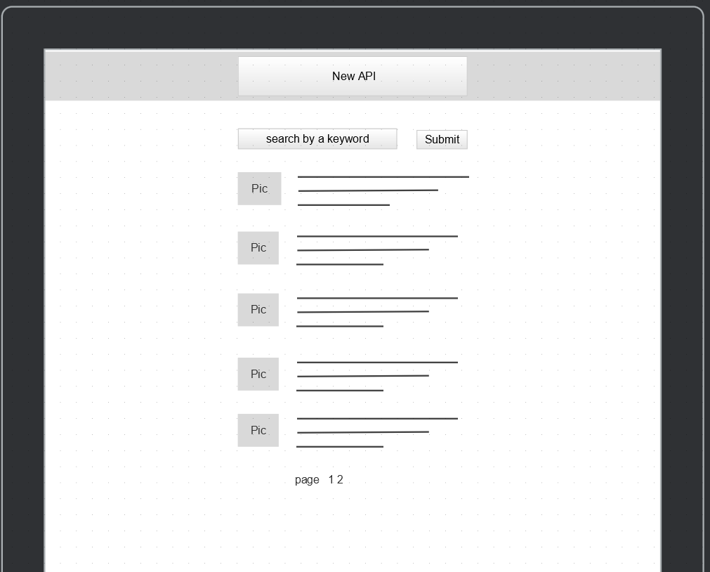

Purpose
Searching news on Google is convenient and easy, but I didn't want to rely on it too much. I wanted to create a site that I can search news from multiple sources by keywords. Then it displays thumbnails and headlines of upto 10 news articles. This project will help me deepen my understanding of DOM manipulation, fetching date from APIs in JSON format, some JS events, and some advanced CSS.
Audience
Audience is anyone aged older than 20s who likes to use one site to search news from multiple resources for convenience. The audience also likes simple and user friendly UI.
Data Sources
- External API: GNews
- LocalStorage: It stores a last searched keyword. The data is retrieved when a web page is fully loaded. Even if a user accidentally leaves the page or refresh it, the last keyword will remain in a search box.
- Local JSON: JSON data is provided by GNews API.
Initial Module List
- main.js
- localStorage.js
- newsApi.js
Wireframe
Since UI is very simple, I will use the same design through different screen
sizes.

Colors/Typography/specific Element styling
- Colors: Mainly Black and white representing a color combination of news paper. I might use some gradient colors for background.
- Typography: Title: Playfair Display / Body font: Lato
- Element styling: When a search box is focused, border becomes highlighted with animation. I am also trying to move a placeholder somewhere rather than removing it.
Schedule for success
- Week 10: Minimal HTML and CSS. Setting up API and test.
- Week 11: Display news articles correctly and Local Storage set up.
- Week 12: CSS transforms and animations
- Week 13: Debug and polish UI